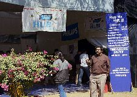

|  | Tech-a-Break is the gamut of all on-the-spot activities happening in Techfest 2004. The event is always full of enthusiasm, creativity and spontaneity, and attracts a huge audience. Tech-a-Break involves a large number of people with a lot of cool prizes like T-shirts, gift vouchers, books, etc to win. If you think you need time off to chill out from the heat of the competitions, Tech-a-Break is the place for you. Watch a documentary, try your luck at the theme quizzes or simply relax! Recharge your grey cells! |
Navy Exhibition:
This year at Techfest, the Indian Navy brings to you some of
the most
fascinating displays from its huge arsenal. Get a feel of what actually
goes into the making of a formidable naval force. Right from floating the
vessel to identifying the enemy, engaging and then destroying it. Watch it
all happen in the Navy exhibition.
Theme Quizzes:
For those who think they know it all, there are theme quizzes on various
topics related to science and technology like aviation, automobiles,
everyday science, popular beliefs etc. Some food for your grey cells and
of course, cool prizes to walk away with.
How - Stuff - Works And
Documentaries:
Various entertaining Documentaries are screened at regular interval to
feed you with the latest and oldest in the world around you. Our previous
documentaries include screenings from the archives of Discovery and
National Geographic. "How Stuff Works" are series of informal lectures
clubbed with presentations and live demos. Learn and enjoy while you see
it happen.
On the Spot
Competitions:
These contests are chosen to test your innovation and optimization skills.
These are seemingly trivial but interesting tasks and it takes a bright
idea to come out a winner. Spontaneity is the key.